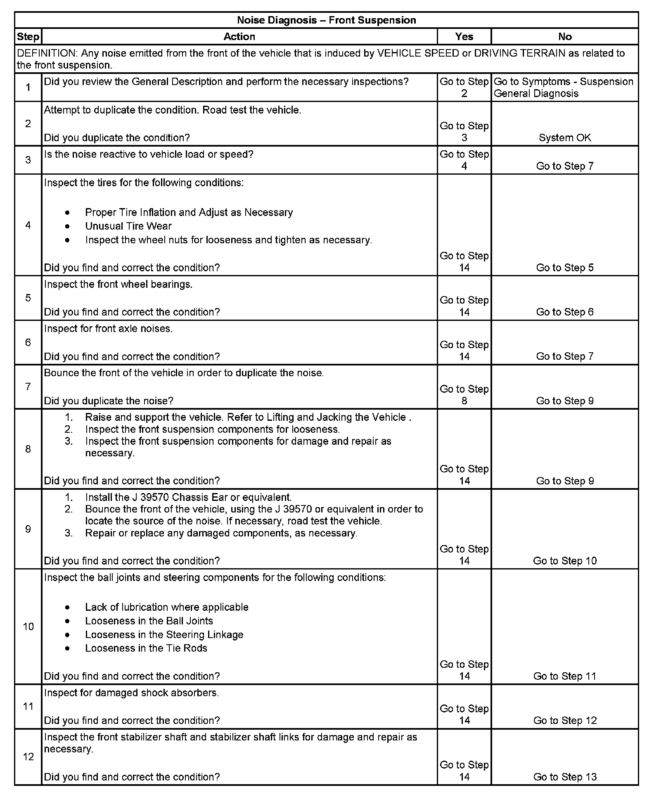
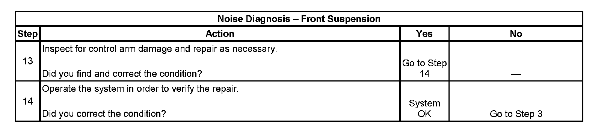

Operation CHARM
: Car repair manuals for everyone.
Home
>>
Cadillac
>>
2007
>>
Escalade ESV AWD V8-6.2L
>>
Repair and Diagnosis
>>
Steering and Suspension
>>
Suspension
>>
Testing and Inspection
>>
Symptom Related Diagnostic Procedures
>>
Noise Diagnosis - Front Suspension
Noise Diagnosis - Front Suspension
Noise Diagnosis - Front
Suspension
Step 1 - Step 12:

Step 13 - Step 14:
